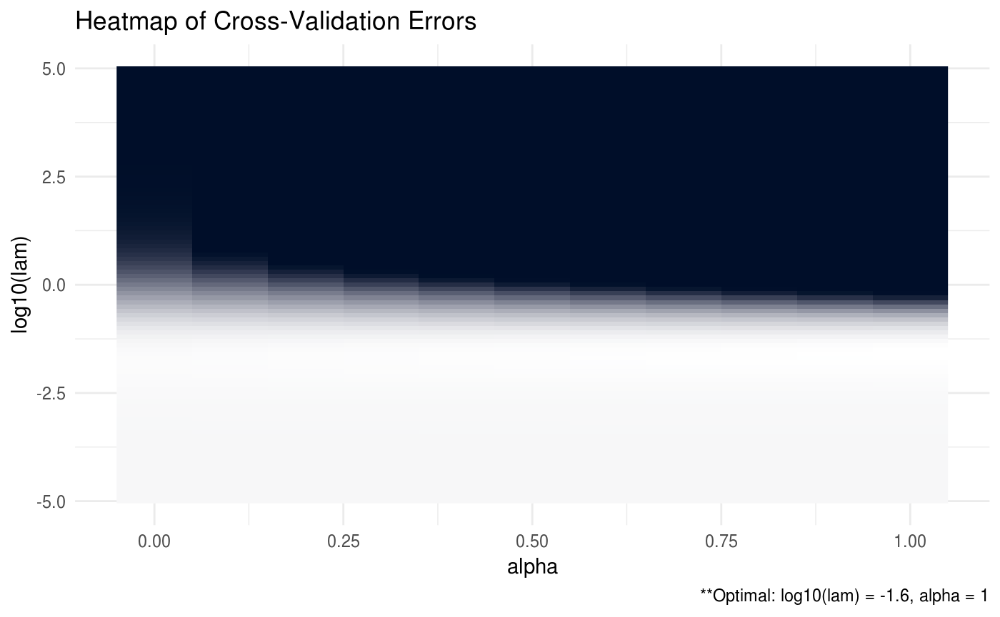
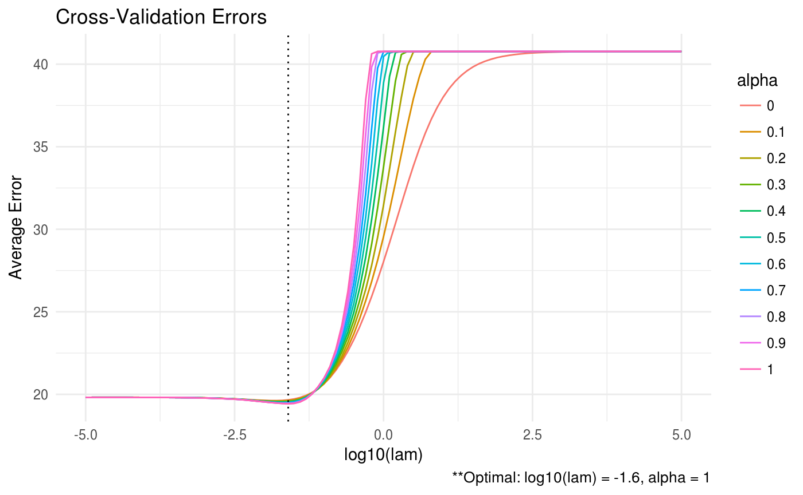

Overview
ADMMsigma is an R package that estimates a penalized precision matrix via the alternating direction method of multipliers (ADMM) algorithm. It currently supports a general elastic-net penalty that allows for both ridge and lasso-type penalties as special cases.

A (possibly incomplete) list of functions contained in the package can be found below:
ADMMsigma()computes the estimated precision matrix (ridge, lasso, and elastic-net type regularization optional)RIDGEsigma()computes the estimated ridge penalized precision matrix via closed-form solutionplot.ADMMsigma()produces a heat map or line graph for cross validation errorsplot.RIDGEsigma()produces a heat map or line graph for cross validation errors
Installation
# The easiest way to install is from CRAN
install.packages("ADMMsigma")
# You can also install the development version from GitHub:
# install.packages("devtools")
devtools::install_github("MGallow/ADMMsigma")If there are any issues/bugs, please let me know: github. You can also contact me via my website. Pull requests are welcome!
Usage
library(ADMMsigma)
# generate data from a sparse matrix
# first compute covariance matrix
S = matrix(0.7, nrow = 5, ncol = 5)
for (i in 1:5){
for (j in 1:5){
S[i, j] = S[i, j]^abs(i - j)
}
}
# print oracle precision matrix (shrinkage might be useful)
(Omega = round(qr.solve(S), 3))## [,1] [,2] [,3] [,4] [,5]
## [1,] 1.961 -1.373 0.000 0.000 0.000
## [2,] -1.373 2.922 -1.373 0.000 0.000
## [3,] 0.000 -1.373 2.922 -1.373 0.000
## [4,] 0.000 0.000 -1.373 2.922 -1.373
## [5,] 0.000 0.000 0.000 -1.373 1.961# generate 100 x 5 data matrix with rows drawn from iid N_p(0, S)
set.seed(123)
Z = matrix(rnorm(100*5), nrow = 100, ncol = 5)
out = eigen(S, symmetric = TRUE)
S.sqrt = out$vectors %*% diag(out$values^0.5) %*% t(out$vectors)
X = Z %*% S.sqrt
# print sample precision matrix (perhaps a bad estimate)
Sample = (nrow(X) - 1)/nrow(X)*cov(X)
round(qr.solve(Sample), 5)## [,1] [,2] [,3] [,4] [,5]
## [1,] 2.32976 -1.55033 0.22105 -0.08607 0.24309
## [2,] -1.55033 3.27561 -1.68026 -0.14277 0.18949
## [3,] 0.22105 -1.68026 3.19897 -1.25158 -0.11016
## [4,] -0.08607 -0.14277 -1.25158 2.76790 -1.37226
## [5,] 0.24309 0.18949 -0.11016 -1.37226 2.05377##
## Call: ADMMsigma(X = X, tol.abs = 1e-08, tol.rel = 1e-08)
##
## Iterations: 47
##
## Tuning parameters:
## log10(lam) alpha
## [1,] -1.599 1
##
## Log-likelihood: -108.41003
##
## Omega:
## [,1] [,2] [,3] [,4] [,5]
## [1,] 2.15283 -1.26902 0.00000 0.00000 0.19765
## [2,] -1.26902 2.79032 -1.32206 -0.08056 0.00925
## [3,] 0.00000 -1.32206 2.85470 -1.17072 -0.00865
## [4,] 0.00000 -0.08056 -1.17072 2.49554 -1.18959
## [5,] 0.19765 0.00925 -0.00865 -1.18959 1.88121##
## Call: ADMMsigma(X = X, alpha = 1)
##
## Iterations: 23
##
## Tuning parameters:
## log10(lam) alpha
## [1,] -1.599 1
##
## Log-likelihood: -108.41249
##
## Omega:
## [,1] [,2] [,3] [,4] [,5]
## [1,] 2.15312 -1.26977 0.00000 0.00000 0.19724
## [2,] -1.26977 2.79119 -1.32200 -0.08152 0.00989
## [3,] 0.00000 -1.32200 2.85339 -1.16930 -0.00931
## [4,] 0.00000 -0.08152 -1.16930 2.49442 -1.18906
## [5,] 0.19724 0.00989 -0.00931 -1.18906 1.88091##
## Call: ADMMsigma(X = X, alpha = 0.5)
##
## Iterations: 20
##
## Tuning parameters:
## log10(lam) alpha
## [1,] -1.821 0.5
##
## Log-likelihood: -101.13591
##
## Omega:
## [,1] [,2] [,3] [,4] [,5]
## [1,] 2.20054 -1.32509 0.01689 -0.00350 0.21805
## [2,] -1.32509 2.90737 -1.37664 -0.19054 0.13641
## [3,] 0.01689 -1.37664 2.92555 -1.12877 -0.12032
## [4,] -0.00350 -0.19054 -1.12877 2.56559 -1.23467
## [5,] 0.21805 0.13641 -0.12032 -1.23467 1.94525##
## Call: ADMMsigma(X = X, alpha = 0)
##
## Iterations: 32
##
## Tuning parameters:
## log10(lam) alpha
## [1,] -1.821 0
##
## Log-likelihood: -99.19743
##
## Omega:
## [,1] [,2] [,3] [,4] [,5]
## [1,] 2.18998 -1.31565 0.04541 -0.04099 0.23512
## [2,] -1.31565 2.90084 -1.37104 -0.22615 0.17806
## [3,] 0.04541 -1.37104 2.89494 -1.07670 -0.17366
## [4,] -0.04099 -0.22615 -1.07670 2.55040 -1.22790
## [5,] 0.23512 0.17806 -0.17366 -1.22790 1.95497##
## Call: RIDGEsigma(X = X, lam = 10^seq(-8, 8, 0.01))
##
## Tuning parameter:
## log10(lam) lam
## [1,] -2.17 0.007
##
## Log-likelihood: -109.18156
##
## Omega:
## [,1] [,2] [,3] [,4] [,5]
## [1,] 2.15416 -1.31185 0.08499 -0.05571 0.22862
## [2,] -1.31185 2.85605 -1.36677 -0.19650 0.16880
## [3,] 0.08499 -1.36677 2.82606 -1.06325 -0.14946
## [4,] -0.05571 -0.19650 -1.06325 2.50721 -1.21935
## [5,] 0.22862 0.16880 -0.14946 -1.21935 1.92871# produce CV heat map for ADMMsigma
ADMM = ADMMsigma(X, lam = 10^seq(-5, 5, 0.1), alpha = seq(0, 1, 0.1))
plot(ADMM, type = "heatmap")

# produce CV heat map for RIDGEsigma
RIDGE = RIDGEsigma(X, lam = 10^seq(-8, 8, 0.01))
plot(RIDGE, type = "heatmap")